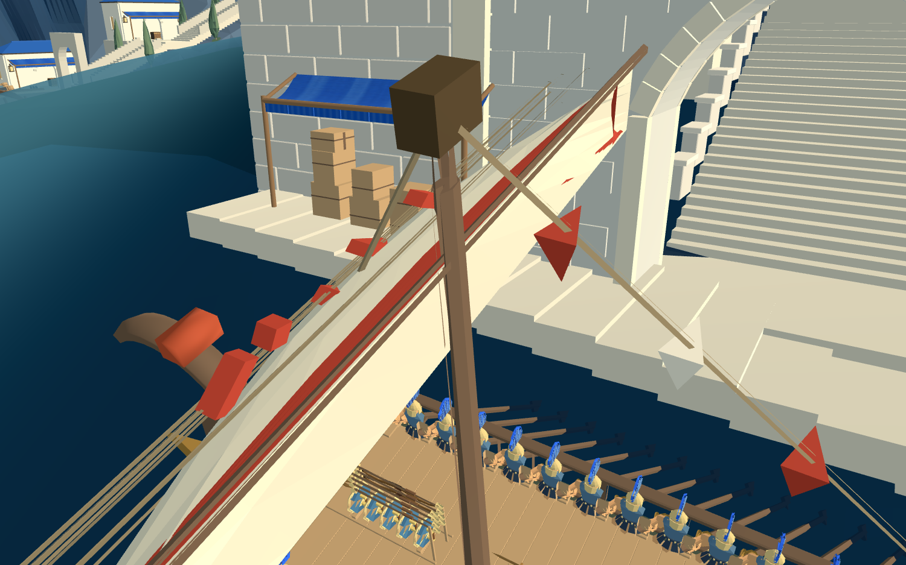
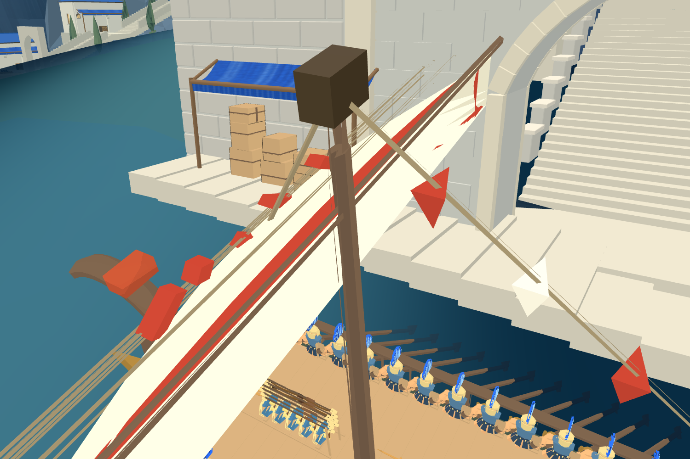
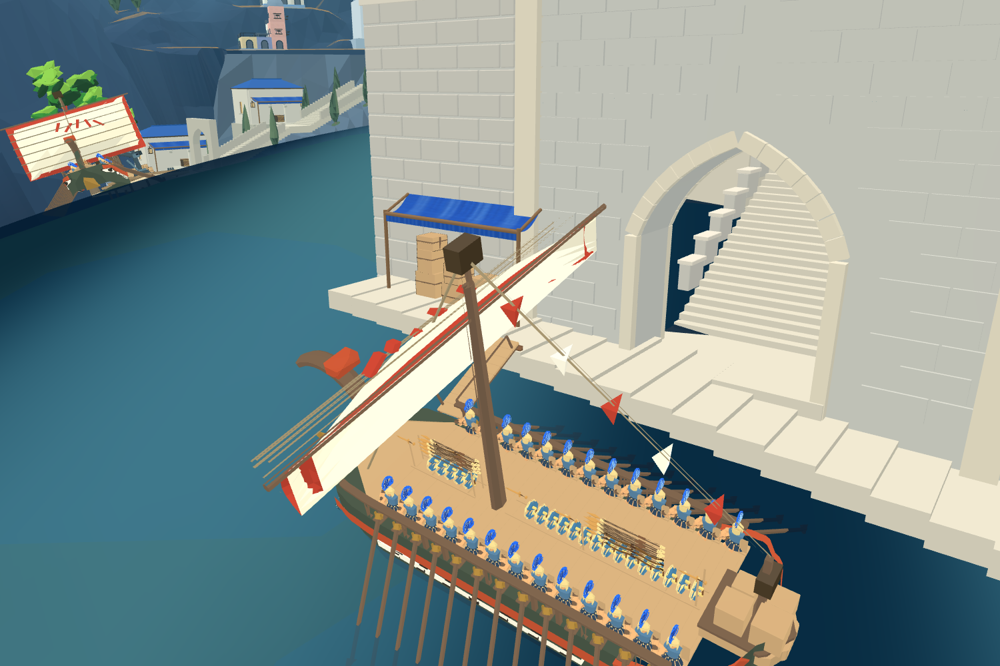

Godot候选控制器已同步：62姿态与Web矩阵对照通过，船员状态保持；展开后甲板44段检查通过。两端姿态对照。控制器仍为隔离调用，正式上下船交互待接入。
网页候选控制器已在真实港口验证展开与收回：各31姿态，共62次外部碰撞检查通过，船员身份和装备存放状态不变。展开/收回报告。Blender动画已保存，正式交互及Godot运行控制仍待接入。
同版候选新增结果：立柱、底梁和铰链留缝调整后，双向44段重新通过；竖起收纳再放下轨迹的31姿态采样未发现三角面相交。查看展开采样。仍待引擎中的展开收回及外部港口验证，尚非正式上线。
原短剑兵携盾沿右侧过道，经船首实体转接板、整块跳板到岸边，再反向返回，两次均完成44段。保留中央原武器、士兵尺寸及全身碰撞。已修复网页静态合并网格未跟随节点修改的问题，当前候选几何已刷新。

仍为隔离候选：使用受碰撞约束的原模型刚性步进，非最终自然行走。待验证所有座位出口、跳板展开收回及正式上下船生命周期；尚未默认启用船岸交互。
最新：补入低过渡木板后，静止几何检查通过；三条落脚线270点无缺面，最大相邻落差12.6厘米。Godot同姿态末端位置与Web相差小于0.1毫米。
原短剑兵实测未通过：携带的盾牌n33撞到跳板栏杆。携行横向总宽约56厘米，但相对身体中心不对称，保持中心线时需约73.4厘米；现栏杆内部约57.4厘米。接下来按实际携行范围改善净宽，不缩小士兵、不隐藏盾牌。

以上仍为隔离候选，原兵未通行，未更新默认船岸交互。
以下是独立浏览器中临时摆放原船的真实画面，不是默认游戏已完成的上下船。

修正了踏面与底梁的高度混用，横向调平跳板，船位调整到新城局部x=53.8、z=115.8。跳板俯仰-13度，附加横向旋转约-6.62度；木质小承托块与船体、当前码头/海床的静止几何检查通过。
已用后台Blender保存原v11战船衍生副本：assets/models/optimized/citadel-boarding-r04/citadel-boarding-r04-candidate.blend；源文件摘要核对未变。承托块在副本中以船的相对位置展示，实际引擎应固定于码头。
仍未通过：原跳板展开过程自身干涉、携带装备的角色上下船；Godot已装配同一隔离连接，但角色被栏杆阻挡。默认8931及Godot继续保留收起跳板的待泊姿态，不能以此图称完整登岸交付。